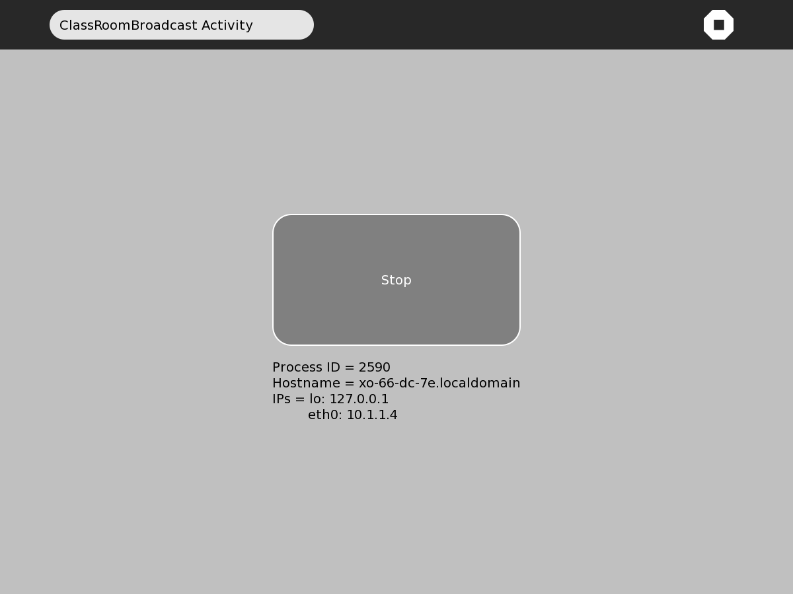
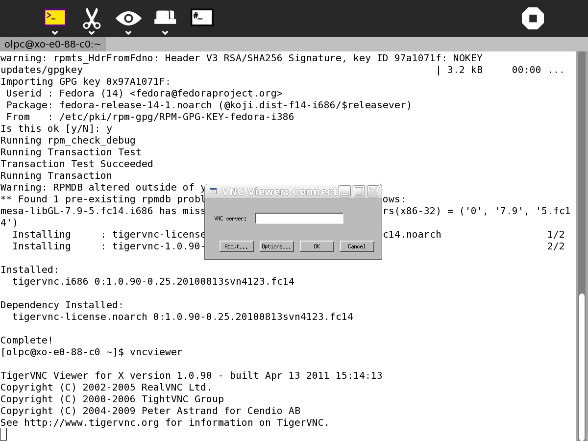

Classroom Broadcast¶
Description¶
ClassroomBroadcast transmits the screen of the ‘server’ laptop to the screens of a number of ‘client’ laptops. Typically the teacher’s laptop would be the server and the students’ laptops the clients. ClassroomBroadcast is a low cost alternative to using a data projector. ClassroomBroadcast runs on the server laptop and a VNC client runs on the client laptops.
Where to get Classroom Broadcast¶
Classroom Broadcast activity is available for download from the Sugar Activity Library: Classroom Broadcast
The source code is available on GitHub.
Installing¶
Install ClassroomBroadcast on the ‘server’ laptop from
ClassroomBroadcast also requires some additional software - x11vnc
To install x11vnc enter the following in Terminal:
sudo yum install x11vnc
Install a VNC client on all the client laptops, in Terminal enter:
sudo yum install vnc
Running¶
Check that all laptops are connected to the same network. Start ClassroomBroadcast on the server laptop. Press the button in the centre of the screen and note the IP address, eth0:, below the button.


Start the VNC client on the client laptops by entering the following in Terminal
vncviewer
Enter the IP address eth0: from the server into the dialog box.


Alternatively you can specify the IP address in the command and skip the dialog box
vncviewer 10.1.1.4
Fullscreen mode allows the client to see the full screen but the client cannot quit till transmission stops
The fullscreen mode can be selected in options in the dialog box or specified from the commandline
vncviewer 10.1.1.4 -fullscreen
The screen of the sending laptop is mirrored on the receiving laptops. It takes a few seconds for the screens to update.
To stop transmitting, click the centre screen button in ClassroomBroadcast. ClassroomBroadcast can be closed like any regular Sugar Activity. When you are finished with the clients, you can close them by clicking the X in the screen upper right which returns you to Terminal. Terminal can then be closed like any regular Sugar Activity.
Where to report problems¶
Please report bugs and make feature requests at classroombroadcast/issues.